Edition 2026-10-11 · minimal design, for the project files in 2026-09-24-EX-MA-simplified/ Cut sizes in inches for 3 × 7/16″ OSB 2 × 4 ft + 1 × 5/8″ particle board 2 × 2 ft · illustrations rendered from the minimal CAD
26 printed part types · 29 prints 23 wood pieces · 4 rope circuits · no electronics
ContentsEX-MA minimal build
Contents
Contents
Introduction3
About this manual3
Safety and good practice4
System overview5
What you are building5
How it works6
Controls and specifications7
Build at a glance8
Tools and supplies9
Parts identification10
Hardware at actual size10
Printed parts11
Boards, wood pieces and stock13
Assembly14
Stage 1 — Print and check the parts14
Stage 2 — Cut, drill and label15
Stage 3 — Sandbox22
Stage 4 — Pedestal23
Stage 5 — Slewing ring and turret26
Stage 6 — Control box28
Stage 7 — PTFE tubes and box mounting31
Stage 8 — Arm33
Stage 9 — Rig the arm ropes37
Stage 10 — Rig the slew ropes39
Stage 11 — Top, handles, knobs and wheel41
Stage 12 — Final test and configuration42
Reference43
Operation and maintenance43
Troubleshooting44
Appendices45
A — Bill of materials45
B — Rope, tube and rod reference46
C — Open items and verification47
D — Differences from the full design48
E — Files and revision49
Page numbers count the cover as page 1. Figures are numbered in order through the manual.
This manual builds the minimal EX-MA: the same arm, turret, levers and rope circuits as the full design, but with no 2″ PVC
conduit. The pedestal stands right against the sandbox wall on two OSB spacer frames, and four 8-32 rods clamp the box, the wall, the spacers and the
pedestal together. Everything is sized for the boards you have. Work through the stages in order.
How the pages work
Stage header: the stage number and what it achieves.
You need: every part and fastener for that stage, with its ID (P05 printed, W01 wood,
H03 hardware, S04 stock) and quantity. Lay them out first.
Numbered steps: do them in order; each step is one action.
Figures: numbered balloons 1 match the list under the figure.
Orange arrows show where a part moves to.
Check boxes: stop and verify before going on.
Units
Everything you cut or drill is given in inches, to the nearest 1/16″: wood, rods, rope, PTFE tube, PEX and copper, and every hole
position. Small grey millimetres follow where the CAD value helps. Printed-part details (M3 screws, Ø60 drums, “3 mm below”) stay metric, as
in the project files.
Directions used everywhere
+u points away from you at the control box, toward the sandbox (“forward”).
+v points to your left; −v to your right. z points up.
Verified, derived or assumed?
Tag
Meaning
Verified
Read from the minimal CAD model, its build scripts or the project reports.
Derived
Worked out from the model geometry for this manual; the reasoning is given next to it.
Assumption
Not in the project files: general practice or a choice you can change.
Open item
A conflict or gap in the design files. Appendix C lists them with options.
Symbols
WarningRisk of injury. Read before doing the step.
CautionRisk of damaging a part or having to take things apart again.
Common mistakeSomething that is easy to get wrong at this point.
CheckA verification point. Do not continue until it passes.
TipPractical advice. Helpful, but not taken from the CAD model.
Open itemA question found in the design files that you must decide on.
Colours in the illustrations code the part type: printed
PLA+ arm shell (PETG) bucket ears
original EX-MA dark parts OSB
spacer frames particle board
metal. Ropes: boom
stick bucket
slew. Parts fitted in earlier steps are light grey.
The EX-MA is hand-powered: no motors, springs or electrics. The hazards are the tools you build it with, cut wire rope, small
parts, and pinch points between moving printed parts.
Cut wire rope is sharp. Each cut end of 7×19 rope splays into fine, stiff wires that puncture skin. Wrap tape round the rope before cutting and cut through the tape; wear gloves and eye protection.
Small parts. The 6 mm BBs, M3 and 8-32 nuts and crimp sleeves are choking hazards. Keep the build area and the finished model away from small children.
Pinch points. The slewing ring, the lever hubs and every joint drum can trap fingers while ropes are tensioned. Keep fingers out of the box and the pedestal while someone moves a lever or the wheel.
Saws, jigsaws and drills. Clamp OSB and particle board before cutting or drilling; support both sides of a cut so the blade does not bind. OSB and particle-board dust is fine wood dust with resin: cut outdoors or with dust extraction, and wear a dust mask.
Adhesives. CA glue bonds skin in seconds. Use it with ventilation. Follow the maker’s cure times for wood glue, CA, epoxy and silicone; the spacer seal needs its silicone cured before Stage 7.
Heat. Printed PLA+ softens well below the temperature of a car interior in summer. Do not leave the model in direct sun or in a hot vehicle. Assumption
Do not force a joint. Every lever has a hard stop at the end of its slot in the box top. If a lever or the wheel resists before reaching a stop, find the cause (page “Troubleshooting”) instead of pushing harder.
Sand and particle board. Particle board swells and crumbles if it gets wet. Seal the floor (Stage 3), keep the sand dry and keep it below the pedestal top. Assumption
Workspace
A flat table about 4 × 2-1/2 ft; good light (rope holes are Ø2.4 mm).
Saw horses or a bench for breaking down the 2 × 4 ft OSB panels; a straight edge or a fence for the rip cuts.
Small trays or bags for hardware: one per stage. Masking tape and a fine marker for labelling every piece.
Before you start
☐
Read the whole manual once, including Appendix C (open items). Decide items 1–5 before the stage they affect.
☐
Check your 5/16″ rod: threaded or smooth (Open item 4), and that you have about 3-1/8 ft of it (Stage 2).
☐
Check the hardware against Appendix A and the actual-size drawings in “Parts identification”.
☐
Have at least 25 ft of rope, a 5 m (16 ft) roll of PTFE tube, 57 BBs plus spares, the crimp sleeves and 22 8-32 nuts.
☐
Your printed parts are used as printed: old lever hubs, old slew spool, elbow support (its base plate is sawn off in Stage 4).
Three levers and a wheel on a wooden control box drive the EX-MA arm through wire ropes. Each control moves exactly one
motion: boom, stick, bucket or
slew. The ropes leave the box through a printed fitting, cross a short chamber inside the sandbox wall and two
spacer frames, enter the pedestal and run up the turret’s centre tube and along the arm.
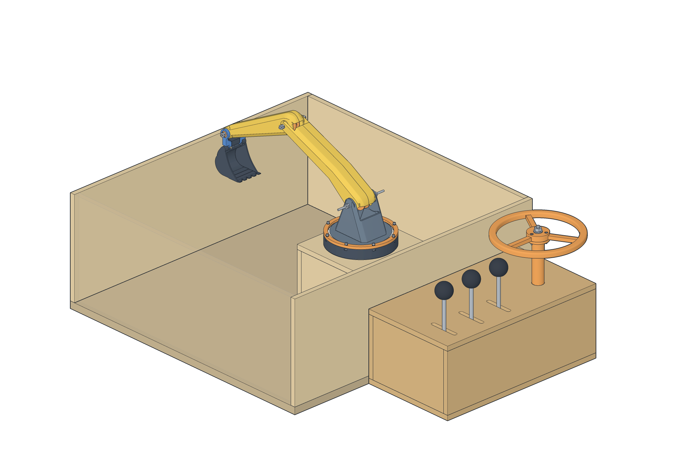
Fig. 1The complete minimal machine as modelled (joints at their modelled pose, the near sandbox wall see-through).
1
Boom lever
2
Stick lever
3
Bucket lever
4
Slew wheel
5
Control box (OSB)
6
Removable box top: the lever slots are the end stops
7
Pedestal, against the sandbox wall on two spacer frames
8
Base with the printed slewing ring (57 BBs)
9
Tower (turret)
10
Boom
11
Stick
12
Bucket
13
Sandbox, 24″ × 24″
Main dimensions Verified
Sandbox (outside, floor included)
24″ × 24″ × 9-1/2″
Control box (outside, deep × wide × high)
8-7/16″ × 15″ × 6-1/8″
Pedestal (outside)
7-3/8″ × 7-1/16″ × 7-5/16″
Overall length, box rear to sandbox far wall
32-7/16″
Knob tops / slew wheel top above the table
9-3/8″ / 10-3/8″
Base / slewing ring; boom / stick pin to pin
Ø140 mm; 209 / 175 mm
Box and sandbox both stand on the table; no shim. The box is 15″ wide because the lever hubs and slew spool are kept as
printed (Appendix D).
Every circuit is a pull-pull loop: one rope, anchored on two drums. Turning the control drum pulls one strand and lets out
the other by the same amount, so the joint drum, and the joint, turns. Nothing else is connected to that rope, so each control moves only
its own joint.
Fig. 2Rope circuits (the “wiring diagram” of this machine). Each lever drives a Ø60
drum on the common lever axle; the slew wheel drives a Ø110 two-lane spool. Lengths are the cut lengths for the minimal build.
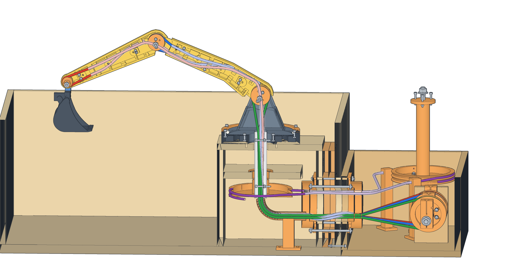
Fig. 3Every rope as modelled, from its control to its joint (cut through the middle; built pose).
The spacer chamber replaces the conduit
Between the box fitting and the pedestal fitting the ropes and tubes cross a 3-1/8″ chamber: the holes in the box front, the sandbox wall and
the pedestal wall, and the windows in the two spacer frames, sealed on all sides. The stick and bucket tubes keep their spare length there as a
gentle bow (radius about 1-3/16″, more than the 5/8″ minimum). Derived
Why the stick and bucket ropes run in PTFE tubes
Their ropes cross the boom joint (the bucket ropes the stick joint too). Inside a tube anchored at the box fitting and at a stop in the arm,
the rope length does not change when another joint moves. The tubes cross each joint through the pivot axis (the pins are split in two for
this). The slew drum sits in the pedestal on the 3/4″ PEX turret tube. Verified
Fig. 4The operator’s view: three levers in slots, the slew wheel on the right. Orange arrows show the lever travel and the wheel.
Lever and wheel directions
Control
Push forward
Pull back
Joint range
Lever swing
Boom lever
boom down
boom up
-40° … +45°
42.5°
Stick lever
stick out
stick in
-45° … +50°
41.2°
Bucket lever
bucket dump
bucket curl
-55° … +85°
39.7°
Slew wheel
turn left (anticlockwise from above) →
arm swings to your left; 1 : 1
−90° … +90°
180°
“Forward” = toward the sandbox (+u). Directions and ranges Verified: architecture notes and kinematics report. You set the lever
direction when you rig each rope (Stage 9); a reversed lever is fixed by reversing that rope’s wrap on its joint drum.
Key specifications Verified
Rope
1/16″ galvanized 7×19
Joint drums (pitch Ø)
boom 30 · stick 26 · bucket 17
Control drums
levers Ø60 · slew spool Ø110
Slew drums
Ø110, two lanes
Slewing ring
57 × 6 mm BBs on Ø118
Joint pins
8-32 threaded rod
Axles / handles
5/16″ rod
Printed parts
26 types, 29 prints, ≈1.03 kg
Materials
arm shell PETG, rest PLA+
Fig. 5What each lever moves: the working ranges set by the slots (detail in Stage 12).
Twelve stages. Stages 1 and 2 are preparation; 3–8 build the machine; 9–12 rig, adjust and test it.
01
Print & check
29 prints on 7 plates (already printed: check them)
p. 14
02
Cut, drill & label
OSB boards, rods, rope, PTFE; label every piece
p. 15
03
Sandbox
particle-board floor + 4 OSB walls
p. 22
04
Pedestal
walls, spacers, fitting + rods, elbow, shelf
p. 23
05
Slewing ring & turret
base, PEX tube, BBs, turret, ring, slew drum
p. 26
06
Control box
carcass, lever axle + hubs, spool, posts
p. 28
07
Tubes & box mounting
4 PTFE tubes, box onto the rods
p. 31
08
Arm
drums, ropes at the joint end, halves, pins, bucket
p. 33
09
Arm ropes at the levers
zero pose, loops on anchors, tension
p. 37
10
Slew ropes
sleeves, drum pockets, spool anchors
p. 39
11
Top, handles, wheel
top panel, handles, knobs, wheel
p. 41
12
Test & configure
ranges, coupling, tension, friction
p. 42
What is different in the minimal build Derived
No conduit. The pedestal stands against the sandbox wall on two glued-on OSB spacer frames (W22, W23). Four 8-32 rods run from the box
fitting (P18) to the pedestal fitting (P17) and clamp the whole stack; they replace the 8 M3 fitting bolts.
Your boards. 7/16″ OSB for every panel except the sandbox floor, which is the 5/8″ particle board used whole. With no shim, the sandbox and
pedestal walls are cut 5/32″ shorter so the turret and fittings stay at their design heights, and the elbow support loses its base plate.
Compact box with your prints. 8-7/16″ deep, 6-1/8″ high, 15″ wide (old hubs at 2-3/4″ spacing, old spool);
handles 5-11/16″; the slew wheel sits 3-3/4″ above the lid.
Order. The rods go into the pedestal in Stage 4; the tubes are seated in P18 and the box goes onto the rods in Stage 7. The lever axle goes in
before the left box side; the joint end of each arm rope is rigged while its arm half is open.
Open items to decide before you start Open item
#
Item
Affects
1
Stick-drum key screws: two M3 × 12 enter each through-hole from opposite sides and their tips overlap by 1.6 mm.
Stage 8
2
Stick joining lugs 1 and 2 at the stick root are 2.9 mm apart: their holes merge, so only one screw fits there.
Stage 8
3
Joining-lug screws cannot be reached once a boom or stick is closed.
Stage 8
4
5/16″ nuts on the axles need threaded rod ends; one design note calls the rod “smooth”.
Stages 2, 6, 11
5
Pedestal-to-floor screws are not counted in the bill of materials.
Stage 4
6
Rope tension: the checklist says slide the anchors “outward”; the geometry says inward.
Stages 9, 10
7
Bucket knob to slew-wheel rim clearance is only 5/8″ with the kept spool.
Print this page at 100 % (no “fit to page”) and lay each screw or rod on its drawing to identify it. The scale bar at the bottom must
measure 4″. Verified
PhotoYour M3 kit (Fgruh, 2300 pc):
socket head caps and button heads in 4–35 mm, nuts, flat and split-lock washers.
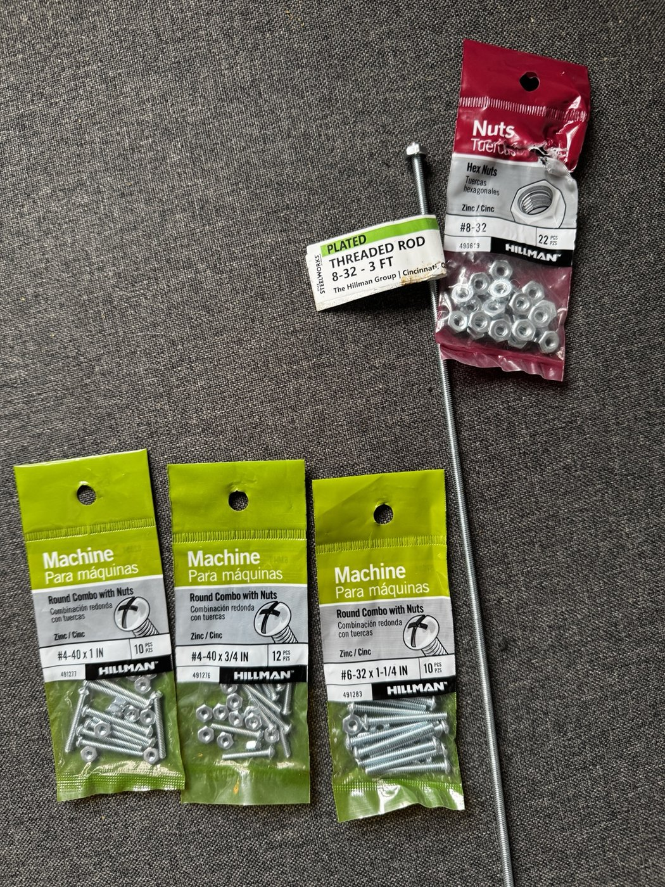
PhotoYour Hillman parts: 3 ft of 8-32
threaded rod and 22 hex nuts. The minimal build uses about 20″ of the rod and 20 nuts.
M3 × 12 vs M3 × 20. They look alike in the bag. Lay them on the drawing above before each step.
Wood screws are your own stock. Flat-head #6 and #8 are drawn; pan heads will not sit flush in the printed counterbores. Assumption
Use the current files for P09, P10 and P12. The base was rebuilt on 2026-09-29 (no supports needed under the race rim, the four unused outer holes filled) and both bucket ears were rebuilt as clean CAD solids (reinforced joint, no mesh defects). The slicer projects in 3MF/ still contain the older versions: replace them before printing plates 4 and 6 (Stage 1). Already printed? Use what you have. Do not use the superseded patched-mesh files STL/2026-09-29-bucket-ear-left.stl / -right.stl.
Arm-shell halves are mirror images. The left halves (P01, P03) sit on the +v side, the operator’s left when the arm points away from the box.
23 wood pieces from the boards you have. Every size is worked out from the minimal CAD model for 7/16″ OSB and the 5/8″ particle
board Verified; cut sizes, board layouts and hole positions are all in Stage 2.
IDs W01–W21 are the same pieces as in the full-design manual; W22 and W23 are the spacer frames that replace the conduit. Pencil the ID on every piece as you cut it.
25 % (40 % on drums, hubs, clamps and pinned parts)
Supports
tree, only where the plate marks them
PETG filament
Generic PETG @BBL A1 — arm shell only
PLA+ filament
SUNLU PLA+ 2.0 @BBL A1 — everything else
PLA+ speed (project)
flow cap 28 mm³/s at 230 °C; inner walls / infill / supports 200 mm/s; accel 10000
If infill looks thin
lower the filament’s max volumetric speed to 25
Fig. 6Summary of the settings saved in 3MF/2026-09-27-{bambu,orca}-*.3mf
(not a screenshot: your slicer shows them under the printer, process and filament presets).
Open the project for your slicer from 3MF/: 2026-09-27-bambu-… for Bambu Studio 2.8.2.61 or 2026-09-27-orca-… for OrcaSlicer. Each opens with its plates named and the settings in place.
In the PLA+ project, replace the base on plate 4 with STL/2026-09-29-base.stl and both ears on plate 6 with STL/2026-09-29-bucket-ear-{left,right}-cad.stl. Keep their orientation: base flat side down; ears on their outer side.
Every part is already in its print orientation and every wall was checked for the 0.6 mm nozzle — do not rotate or rescale parts.
Print the plates in the order of the table below and do each fit test (last column). Parts you already have: do the fit test now. The minimal build uses every part as printed; only the elbow support (P16) gets its base plate sawn off in Stage 4.
Material
Plate
Name
Parts
Fit test after printing
PETG
arm 1
Arm shell
P02, P01, P04, P03
bucket drum-axle journals turn freely in both stick-half nose holes
PLA+
other 1
Pedestal
P17, P14, P15, P16
copper elbow pushes into P17’s socket; a PTFE tube slides through its window; the PEX tube turns in P15; P14 slides onto the PEX tube (clamp open)
PLA+
other 2
Control box 1/2
P24, P20, P19, P25, P22 ×3, P26 ×2
5/16″ rod slides through each hub and into its handle socket; rod enters each knob; riser sits flat
PLA+
other 3
Control box 2/2
P18, P23, P21
rod through the hub; spool turns on the rod; 4 PTFE tubes seat together in P18’s window and stop on its floor
PLA+
other 4
Turret + slewing ring 1/2
P12 (new file), P11
PEX tube slides into the tower’s centre bore
PLA+
other 5
Turret + slewing ring 2/2
P13
a BB rolls freely in the race between the base rim and the ring
PLA+
other 6
Arm mechanism + bucket
P08, P05, P06, P10 + P09 (new files), P07
each drum sits flat
Check after every plate. Remove all support, then do the fit test. A hub that will not slide on the rod, or a drum that rocks on the table, gets reprinted now — not after it is rigged.
New base (P12). Only the eight nut-slot roofs need support (about 2 cm²; the race rim has its own 45° support built in). The bill of materials still lists 28 cm² for the old base. Verified
Ears swapped. P09 (left) and P10 (right) are mirror images. Mark them L and R as soon as they come off the plate.
5/16″ rod total 36″ plus 4 saw cuts: a 3 ft rod is about 1/4″ short, so buy 4 ft. 8-32 total 19-7/8″ from your
3 ft Hillman rod.
Cut all rope and PTFE pieces. Wrap tape round the rope at the cut mark and cut through the tape.
Write the piece name on a tape flag at both ends of every rope and tube (e.g. “STICK — box end”).
On the three arm ropes, mark the midpoint with a second colour.
Cut the rods square; file a small chamfer on each end. Run a nut on and off each 8-32 piece to clean the thread.
Cut the PEX and copper square and deburr inside and out: a burr will cut a rope.
Rope ends. Tape every cut end until it is crimped. Loose wires go through skin easily.
Open item 4: axle nuts. The 8-1/16″ lever axle and the 10-13/16″ spool axle carry 5/16″ nuts. If your 5/16″ rod is smooth, thread about 5/8″ at each end of those two rods with a 5/16-18 die, or use 5/16″ shaft collars.
Particle boardsandbox floor W17: the whole 24″ × 24″ panel, no cuts
2 OSB boards22 pieces, 1725 sq in (75 % of the 2 boards)
1 OSB board sparekeep it for re-cuts
Sizes for 7/16″ OSB, worked out from the minimal CAD panels Verified. Tick each piece as you cut it, pencil its ID on it and draw an arrow to
its bottom edge (holes are measured from it).
ID
Piece
Cut size (in)
mm
Holes
sq in
☐
W01
box floor
15″ × 8-7/16″
381 × 214
1
126
☐
W02
box front
15″ × 5-1/4″
381 × 134
7
79
☐
W03
box rear
15″ × 5-1/4″
381 × 134
—
79
☐
W04
box right side
7-9/16″ × 5-1/4″
192 × 134
—
40
☐
W05
box left side
7-9/16″ × 5-1/4″
192 × 134
—
40
☐
W06
box top (removable)
15″ × 8-7/16″
381 × 214
4
126
☐
W07
axle bearing block left
4″ × 2-3/8″
101 × 60
1
9
☐
W08
axle bearing block right
4″ × 2-3/8″
101 × 60
1
9
☐
W09
pedestal top
7-3/8″ × 7-1/16″
188 × 180
5
52
☐
W10
pedestal wall -u (conduit)
7-1/16″ × 6-7/8″
180 × 175
5
49
☐
W11
pedestal wall +u (removable access)
7-1/16″ × 6-7/8″
180 × 175
—
49
☐
W12
pedestal wall -v
6-7/8″ × 6-1/2″
175 × 166
—
45
☐
W13
pedestal wall +v
6-7/8″ × 6-1/2″
175 × 166
—
45
☐
W14
pedestal shelf
6-3/16″ × 5-7/16″
158 × 138
1
34
☐
W15
pedestal shelf cleat -v
5-7/16″ × 7/16″
138 × 11
—
2
☐
W16
pedestal shelf cleat +v
5-7/16″ × 7/16″
138 × 11
—
2
☐
W17
sandbox floor
24″ × 24″
610 × 610
—
576
☐
W18
sandbox wall -u (box side)
24″ × 8-7/8″
610 × 226
7
214
☐
W19
sandbox wall +u
24″ × 8-7/8″
610 × 226
—
214
☐
W20
sandbox wall -v
23-1/8″ × 8-7/8″
588 × 226
—
206
☐
W21
sandbox wall +v
23-1/8″ × 8-7/8″
588 × 226
—
206
☐
W22
spacer frame 1
7-1/16″ × 6-7/8″
180 × 175
1
49
☐
W23
spacer frame 2
7-1/16″ × 6-7/8″
180 × 175
1
49
Walls of the sandbox and the pedestal are 5/32″ shorter than the full design: the 5/8″ floor stands on the table with no shim,
so the turret and both fittings stay at their design heights. Derived
Rip the strips first (orange dashed lines, R1, R2 …), then crosscut each strip. Drawn to scale with a 1/8″ kerf; grey is offcut. After the crosscut, trim any piece that is narrower than its strip to its cut-list size.
Cleats W15 and W16. A 7/16″ × 7/16″ stick is too thin to rip safely on its own. Rip it off the edge of a wider offcut with a push stick, or use any square stick at least 7/16″ thick. Assumption
OSB board 1 — 2 × 4 ft, 7/16″
Thin strips not labelled on the drawing: W15, W16; see the cut order.
W17 sandbox floor: use the whole particle-board panel, no cuts. The design is 1/64″ bigger; that does not matter. Seal both faces and all edges before you build on it (Stage 3).
Measure a along the bottom edge and b up the side, from the lower-left corner as drawn. The bold size is the drill bit. Clamp a scrap under OSB so the holes do not tear out.
W01 box floor
a from the −u edge, b from the −v (right) edge — seen from above
Hole / bit
a / b (in)
mm
For
A
11/32″Ø8.5 mm
3-1/16″ / 3″
77 / 76
spool axle; 7/8″ counterbore 9/32″ deep from below
W02 box front
a from the −v (right) edge, b from the bottom edge — seen from the +u side
Hole / bit
a / b (in)
mm
For
A
2-7/16″ hole sawØ62.0 mm
10-3/16″ / 3-3/16″
258 / 81
tube passage
B
3/16″Ø4.6 mm
11-3/4″ / 1-5/8″
298 / 41
8-32 through-rod
C
3/16″Ø4.6 mm
11-3/4″ / 4-3/4″
298 / 121
8-32 through-rod
D
3/16″Ø4.6 mm
8-9/16″ / 1-5/8″
218 / 41
8-32 through-rod
E
3/16″Ø4.6 mm
8-9/16″ / 4-3/4″
218 / 121
8-32 through-rod
F
3/16″Ø4.6 mm
1″ / 1″
25 / 25
M3 × 30 corner bolt
G
3/16″Ø4.6 mm
14-5/16″ / 1″
364 / 25
M3 × 30 corner bolt
W06 box top (removable)
a from the −u edge, b from the −v (right) edge — seen from above
Hole / bit
a / b (in)
mm
For
A
1″ spade / ForstnerØ24.4 mm
3-1/16″ / 3″
77 / 76
spool tube bearing
B
slot 2-5/8″: 23/64″ holes at a 1-1/8″ & 3-3/8″, saw between 66.1 mm
2-1/4″ / 13-1/4″
57 / 336
boom lever slot = hard stop (42 deg swing)
C
slot 2-1/2″: 23/64″ holes at a 1-3/16″ & 3-5/16″, saw between 64.1 mm
2-1/4″ / 10-1/2″
57 / 266
stick lever slot = hard stop (41 deg swing)
D
slot 2-7/16″: 23/64″ holes at a 1-3/16″ & 3-5/16″, saw between 61.8 mm
2-1/4″ / 7-11/16″
57 / 196
bucket lever slot = hard stop (40 deg swing)
W07 + W08 axle bearing blocks (×2, identical)
a from the −u edge, b from the bottom edge — seen from the −v side
Hole / bit
a / b (in)
mm
For
A
11/32″Ø8.5 mm
1-3/16″ / 2-13/16″
30 / 71
5/16″ lever axle
Drill the box front W02 through the sandbox wall W18. Their four rod holes and two corner holes must line up, but the panels are not the same size. Drill W18 from its card. Clamp W02 on it face to face, W02’s −v end 1-9/16″ in from W18’s −v end and W02’s bottom edge 3/16″ below W18’s (the two 2-7/16″ holes then line up), and drill the six 3/16″ holes through W18’s holes into W02. Derived
a from the −v (right) edge, b from the bottom edge — seen from the +u side
Hole / bit
a / b (in)
mm
For
A
window 3-15/16″ square: corners at a 1-1/4″ – 5-3/16″, b 1″ – 4-15/16″ 100 mm
3-1/4″ / 3″
82 / 76
window (3/8″ hole in each corner, then jigsaw)
Drilling tips Assumption
Clean holes in OSB: clamp a scrap under the panel, or drill until the point shows and finish from the other side.
2-7/16″ holes: hole saw with its pilot; cut halfway from each face.
Lever slots (W06): drill a 23/64″ hole at each end position given, saw or jigsaw the two sides between them, file smooth. The handle must run end to end without catching: the slot ends are the lever stops.
Spacer windows (W22, W23): mark the square, drill a 3/8″ hole inside each corner, jigsaw between them. Slightly big is fine; never smaller.
Counterbore under the box floor (W01): 7/8″ Forstner 9/32″ deep first, then the 11/32″ hole through its centre.
Particle-board floor and four OSB walls, glued and screwed. The −u wall is the drilled one: the control box bolts to its outside.
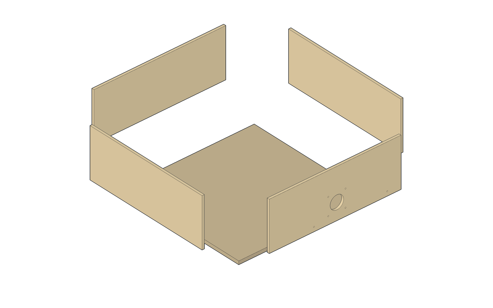
1Sandbox floor: 24″ × 24″ particle board
2Wall −u (box side, drilled)
3Wall +u
4Wall −v
5Wall +v
Fig. 7Sandbox: four walls on the floor.
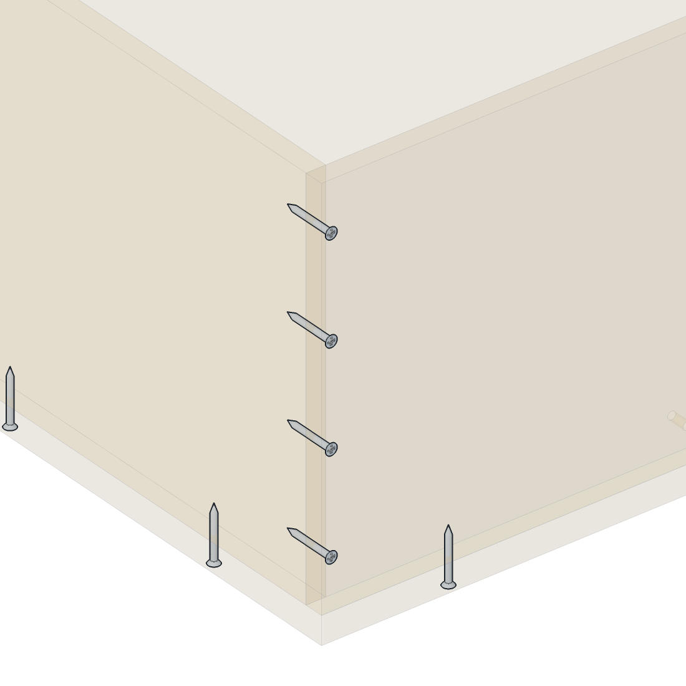
1#6 × 1-1/4″ up through the floor
2#6 × 1-1/4″ through wall −u into wall +v
Fig. 8Corner joint, walls see-through.
You need
W17
Floor, 5/8″ particle board 24″ × 24″
1
W18
Wall −u (drilled), 24″ × 8-7/8″
1
W19
Wall +u, 24″ × 8-7/8″
1
W20
Wall −v, 23-1/8″ × 8-7/8″
1
W21
Wall +v, 23-1/8″ × 8-7/8″
1
H20
#6 × 1-1/4″ wood screw
32
Wood glue; floor sealer
Seal the particle board on both faces and all four edges and let it dry. Assumption
Glue and screw the four walls on top of the floor: 4 screws up through the floor into each wall’s bottom edge. Drill a 3/32″ pilot for every screw into an OSB edge, and keep screws 1/2″ from the corners.
The −v and +v walls fit between the −u and +u walls: 4 screws through each ±u wall into the ends of the ±v walls.
Put the −u wall’s holes at the bottom: the 2-7/16″ hole centre is 3″ above the wall’s bottom edge and 11-11/16″ from its −v end (operator’s right). Verified
Check the box is square (equal diagonals) before the glue sets.
Check. Walls flush with the floor edges; diagonals equal within 1/16″; walls 8-7/8″ tall, so the rim is 9-1/2″ above the table.
Hole side. Fitting the −u wall upside down puts the big hole near the top. The hole is 3″ from the bottom.
An OSB column that stands against the sandbox wall on two spacer frames. It carries the slewing ring on top and the slew drum inside.
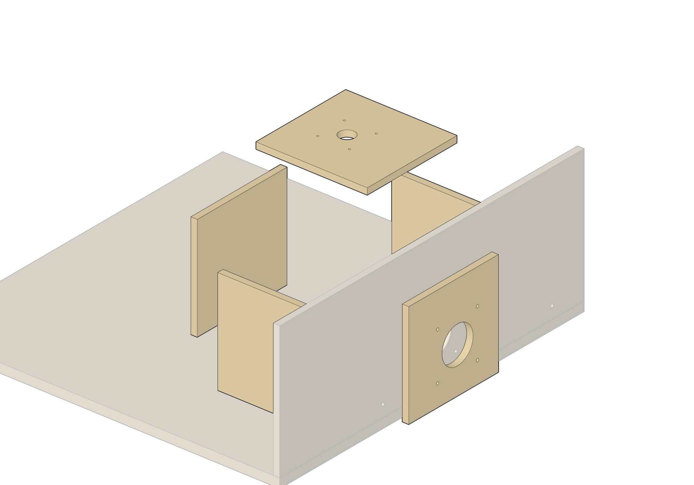
1Wall −u (conduit wall)
2Wall −v
3Wall +v
4Pedestal top
5Wall +u (removable — screw only)
Fig. 9Pedestal walls and top. Wall +u is screwed only: it is the service hatch.
You need
W09
Pedestal top, 7-3/8″ × 7-1/16″
1
W10
Wall −u (drilled), 7-1/16″ × 6-7/8″
1
W11
Wall +u (removable), 7-1/16″ × 6-7/8″
1
W12
Wall −v, 6-7/8″ × 6-1/2″
1
W13
Wall +v, 6-7/8″ × 6-1/2″
1
H20
#6 × 1-1/4″ wood screw
32
Glue and screw walls −v and +v between walls −u and +u (4 screws per joint, through the ±u walls, 3/32″ pilots). Fit wall +u with screws only, no glue.
Glue and screw the top onto the four walls (4 screws per wall). The top’s 1″ hole is the PEX clearance; its four 1/8″ holes are pilots for the base screws.
Build the pedestal on the bench, not in the sandbox: the spacers and the rods go on first (next page). The figure shows it in its final place.
Check. The pedestal is 7-5/16″ tall and its top is flat and square to the walls. Wall −u has a 2-7/16″ hole and four 3/16″ holes around it.
Stage 4 — continued: spacer frames, pedestal fitting and through-rods
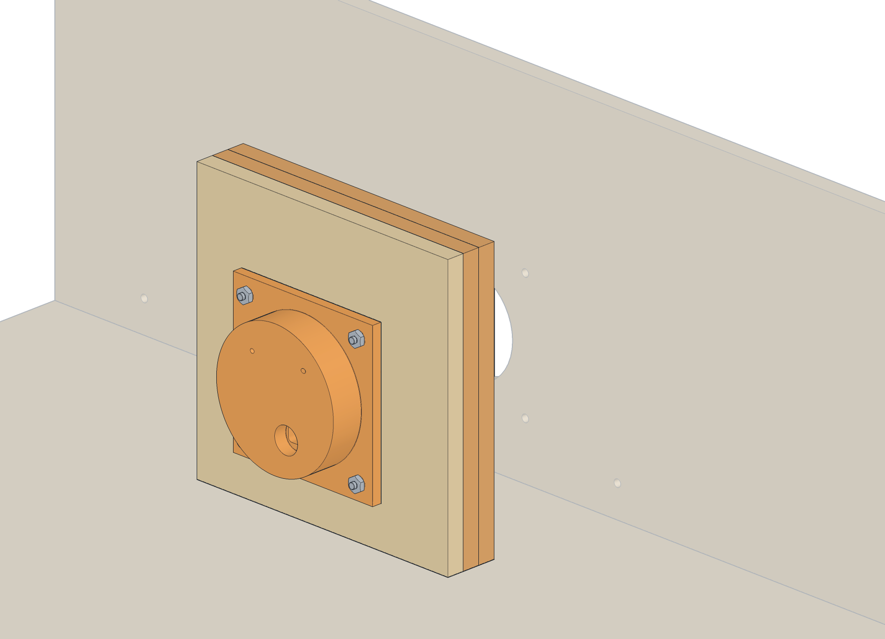
1Spacer frames W22 + W23, glued to the pedestal wall
2Pedestal wall −u (W10)
38-32 rods, nuts on the pedestal fitting
4Rods go through the four 3/16″ holes in the sandbox wall
Fig. 10The stack that replaces the conduit (cut through the middle).
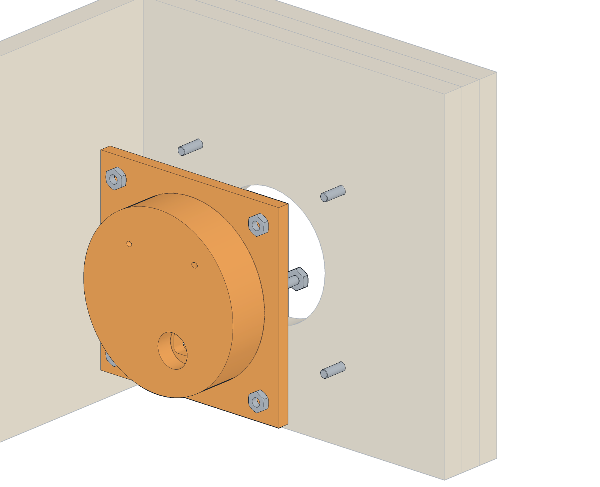
1Pedestal conduit fitting (P17)
24 × 8-32 rod 3-1/16″, nut on the fitting
3Spacer frames W22 + W23 (glued on)
4Wall −u
5Copper socket (elbow)
Fig. 11P17 on wall −u with the four rods, from inside the pedestal.
You need (this page)
W22
Spacer frame 1
1
W23
Spacer frame 2
1
Wood glue
P17
Pedestal conduit fitting
1
H06
8-32 rod, 3-1/16″
4
H13
8-32 nut
4
Why spacers. Two 7/16″ frames fill the gap the conduit used to cross. Their 3-15/16″ windows, with the holes in the walls, make a sealed 3-1/8″ chamber between the two fittings. Derived
Glue the two spacer frames to the outside of wall −u, one on the other, edges flush with the wall’s edges, windows lined up. The four 3/16″ holes and the 2-7/16″ hole must all be clear inside the window. Clamp until set.
From inside the pedestal, hold P17’s square flange flat against wall −u: the big socket faces the wall’s hole; the round boss, with the small copper socket in its end, points into the pedestal. Line up its four corner holes with the wall’s.
Push a 3-1/16″ 8-32 rod through each corner: P17’s flange, the wall, then out through the spacer window. Run an 8-32 nut onto the inner end until about 1/16″ of thread shows past it, and snug it against the flange. Each rod now sticks out 1-5/16″ past the spacers.
Keep the four 8-32 nuts for the box side in this stage’s bag (Stage 7).
Fitting turned round. If the big socket faces into the pedestal, the copper socket faces the wall and the tubes cannot reach the turret.
Stage 4 — continued: into the sandbox, copper elbow, shelf
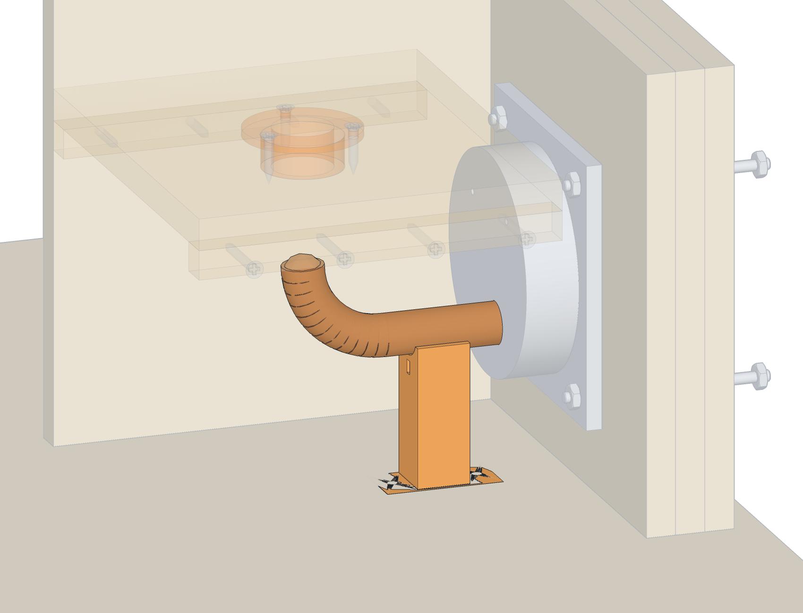
11/2″ copper elbow (pushed into the fitting socket)
2Elbow support (P16)
3Base plate sawn off; 1 × #6 × 1-1/4″ up through the floor
4Cable-tie slot
5Pedestal fitting
Fig. 12Copper elbow on the sawn elbow support.
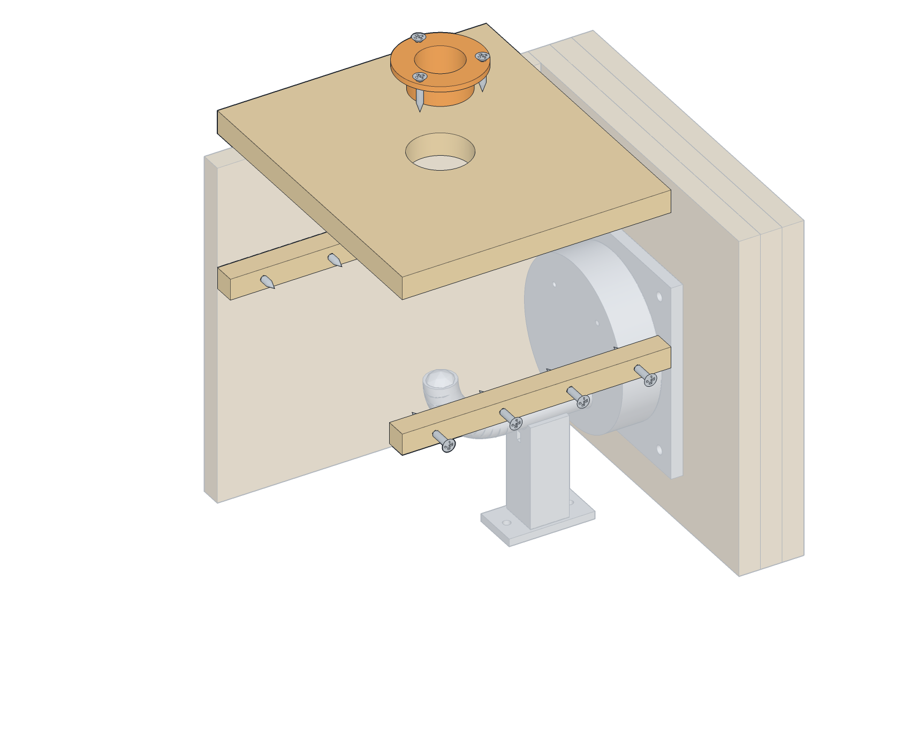
1Shelf (rests on the cleats)
2Shelf cleats (screwed to walls ±v)
3PEX bushing (P15), flange up
43 × #6 × 3/4″
Fig. 13Cleats, shelf and PEX bushing (shelf and bushing lifted out).
You need (this page)
S07
1/2″ copper elbow + pipe
1
P16
Elbow support (base plate sawn off)
1
H20
#6 × 1-1/4″ (elbow support)
1
Silicone; CA or epoxy; cable tie
W14
Shelf
1
W15
Shelf cleat −v
1
W16
Shelf cleat +v
1
H20
#6 × 1-1/4″ (cleats)
8
P15
PEX bushing
1
H19
#6 × 3/4″ (bushing)
3
Run a bead of silicone round the outer face of the outer spacer, just outside its window. Stand the pedestal on the sandbox floor and slide it against the −u wall so the four rods pass through the wall’s 3/16″ holes. The rods stick out 7/8″ outside the sandbox. Fit a nut finger-tight on each to hold the pedestal while the silicone cures (they come off again in Stage 7).
Saw the 5/32″ base plate off the elbow support, flush with its post. Push the copper elbow’s horizontal leg into P17’s copper socket; the other leg points straight up.
Stand the post under the horizontal leg (about 1-15/16″ in from the inside of wall −u), mark its centre on the floor, drill a 1/8″ pilot through the floor there, and fix it with one #6 × 1-1/4″ up from below plus a few drops of CA. Cable-tie the elbow into the saddle.
Screw the cleats to the inside of walls −v and +v, their tops 4-7/16″ above the sandbox floor. Lay the shelf on them and screw the PEX bushing into the shelf hole, flange on top.
Check. The elbow’s top opening is directly under the bushing’s bore (sight down through it). The copper does not move when pulled. No light shows between the outer spacer and the sandbox wall. Verified
Open item 5: fixing the pedestal down. The rods clamp the pedestal to the sandbox wall once the box is on (Stage 7). For a firmer base, add 4 × #6 × 1-1/4″ up through the floor into the ±v walls, 2 each (not in the bill of materials). Assumption
The base screws to the pedestal; the turret rides on 57 BBs and is held down by the retaining ring.
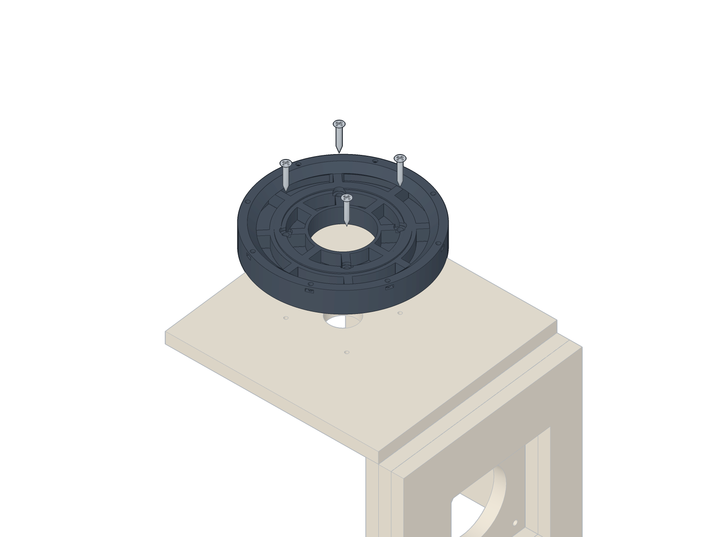
1Base (P12) — current file 2026-09-29-base
24 × #8 × 1″ wood screw in the counterbores
3Pedestal top (1/8″ pilots)
4Nut slots in the rim (8)
Fig. 14Base onto the pedestal top.
1Tower (P11)
2Turret hub clamp: M3 × 25 + lock washer + nut
33/4″ PEX-B tube, 4-3/4″
Fig. 15PEX tube into the turret hub.
You need
P12
Base (2026-09-29 file)
1
H18
#8 × 1″ wood screw
4
P11
Tower
1
S06
3/4″ PEX-B tube, 4-3/4″
1
H04
M3 × 25 (hub clamp)
1
H09
M3 split-lock washer
1
H07
M3 nut
1
Set the base on the pedestal top with its centre bore over the 1″ hole. Turn it until its four counterbored holes sit over the four 1/8″ pilots.
Screw it down with 4 × #8 × 1″ in the counterbores. Do not over-tighten into the OSB.
Push the PEX tube up into the tower’s clamp hub from below until its top is 3 mm below the top face of the turret flange (tube top at z 22, flange top at z 25). Verified
Tighten the hub’s pinch clamp: M3 × 25 through the hub, split-lock washer and nut on the far side. The tube must not turn in the hub.
Clamp the tube before the turret goes on. Once the turret sits on the balls, the hub clamp is inside the base and cannot be reached. Verified
Fig. 16Slewing ring, exploded and cut in half to show the race.
You need (this page)
S05
6 mm BBs
57
P13
Retaining ring
1
H02
M3 × 12 socket cap
8
H09
M3 split-lock washer
9
H07
M3 nut
9
P14
Pedestal slew drum
1
H04
M3 × 25 (drum clamp)
1
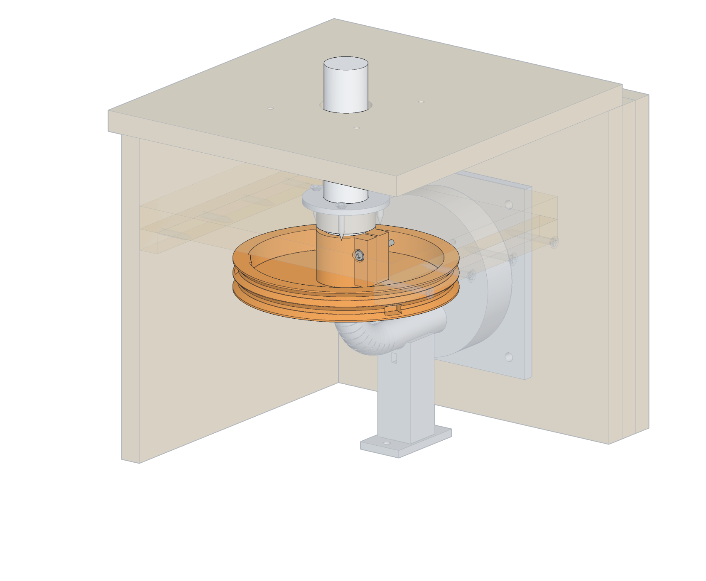
1Slew drum (P14) on the PEX tube
2Pinch clamp: M3 × 25 + lock washer + nut
3PEX tube end 1/16″ below the drum
4Copper elbow end inside the PEX bore
Fig. 17Slew drum on the PEX tube inside the pedestal (wall +u removed).
Slide an M3 nut into each of the 8 slots in the outside of the base rim, flat side up, until it lines up with the hole above it.
Lay the 57 BBs in the base’s race (the 45° groove round the rim). They fill the circle with about 0.4 mm between balls.
From inside the pedestal (wall +u off; move it aside), hold the slew drum under the shelf, hub up. Lower the turret: the PEX tube goes down through the base, the pedestal top, the bushing and into the drum. The turret flange settles on the balls.
Lay the retaining ring on the rim and fit the 8 × M3 × 12, a split-lock washer under each head, into the nuts. Tighten them in a cross pattern, a little at a time.
Slide the drum up or down the tube until the tube’s end is 2 mm below the drum’s underside, and tighten its pinch clamp (M3 × 25, lock washer, nut) lightly. Its rotation is set in Stage 10.
Check — turret. The turret turns by hand with no rocking and no lift. The model allows 0.65 mm lift and 1.1° rock before parts touch. If it rocks, shim under the retaining ring; if it binds, loosen the ring screws evenly a quarter turn. Verified
Count the balls. 57 balls. One missing makes a gap that knocks as the turret turns; one extra jams the ring.
Box carcass, lever axle with its three hubs, the slew spool and the two sleeve posts. The left side and the top go on later.
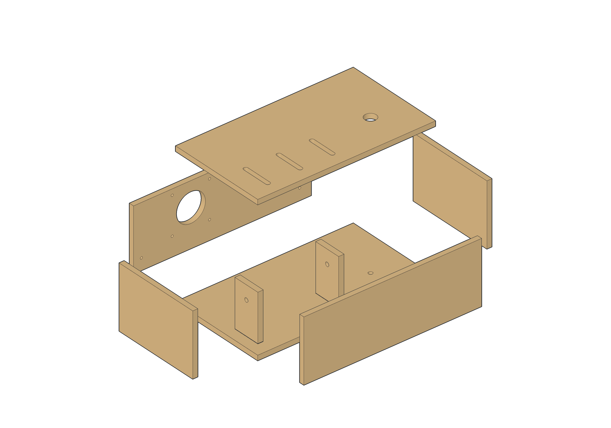
1Floor
2Front (to the sandbox; drilled)
3Rear
4Right side
5Left side (fit after the lever axle)
6Top (removable, fitted last)
7Bearing blocks
Fig. 18Control box panels.
You need
W01
Box floor, 15″ × 8-7/16″
1
W02
Box front (drilled), 15″ × 5-1/4″
1
W03
Box rear, 15″ × 5-1/4″
1
W04
Box right side, 7-9/16″ × 5-1/4″
1
W05
Box left side (later in this stage)
1
H20
#6 × 1-1/4″ wood screw
32
Wood glue
Glue and screw the front, rear and right side onto the floor (4 screws per edge, up through the floor, 3/32″ pilots).
Join the front and rear to the right side (4 screws per joint, through the front and rear).
The front’s 2-7/16″ hole is low (centre 3-3/16″ above the floor’s top face) and right of centre: 10-3/16″ from the box’s right-hand (−v) outside face, 4-13/16″ from its left. Verified
Leave the left side and the top off for now.
Box size. With the hubs and spool you already printed, the box is 8-7/16″ deep, 15″ wide and 6-1/8″ high outside. Verified
Fig. 19Lever axle stack, exploded along the axle: blocks, three hubs, washers and nuts.
You need (this page)
W07
Axle bearing block left
1
W08
Axle bearing block right
1
H14
5/16″ rod, 8-1/16″
1
P19
Lever hub, boom
1
P20
Lever hub, stick
1
P21
Lever hub, bucket
1
H17
5/16″ nut + SAE washer
2
H19
#6 × 3/4″ wood screw
4
On the bench, slide onto the rod in this order from the left (+v) end: left block, boom hub, stick hub, bucket hub, right block. The handle sockets all point the same way (up).
Centre the rod (4-1/16″ each side of the middle). Fit a washer and a nut outside each block, finger-tight plus a quarter turn: the hubs must still turn freely. They are 0.5 mm apart by design. Verified
Stand the stack on the box floor: axle 2-1/4″ from the floor’s rear (−u) edge, left block’s outer face 15/16″ in from the floor’s left (+v) edge. Screw each block from below: 2 × #6 × 3/4″ (1/8″ pilots in the block edge). Verified
Now fit the left side (glue + 4 screws per edge).
Hub order. Boom (P19) on the operator’s left, stick (P20) centre, bucket (P21) right. The hubs look alike — check the label on each before sliding it on. Verified
Stage 6 — continued: slew spool, riser and sleeve posts
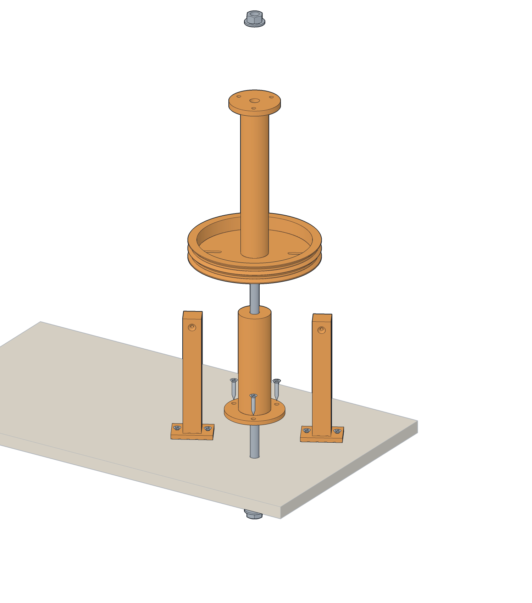
1Slew spool (P23)
2Spool riser (P25) + 3 × #6 × 3/4″
35/16″ spool axle, 10-13/16″
4Washer + jam nut in the 7/8″ counterbore under the floor
5Washer + nut on top (fitted with the wheel)
6Sleeve posts (P26 ×2) + 2 × #6 × 3/4″ each
Fig. 20Spool axle, riser, spool and posts.
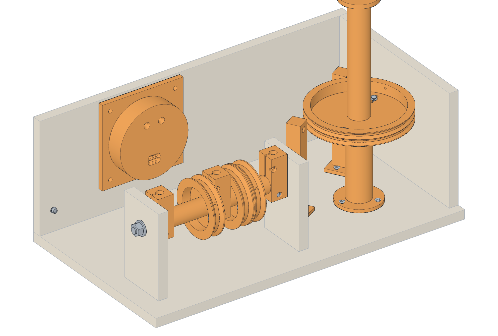
1Lever axle + 3 hubs
2Bearing blocks
3Spool riser + slew spool
4Sleeve posts
5Box conduit fitting (fitted in Stage 7)
Fig. 21Inside the box at the end of Stage 6 (top, rear and left side hidden).
You need (this page)
P25
Spool riser
1
P23
Slew spool
1
H15
5/16″ rod, 10-13/16″
1
H17
5/16″ nut + SAE washer
1
P26
Slew sleeve post
2
H19
#6 × 3/4″ wood screw
7
P18
Box conduit fitting (loose for now)
1
Post positions come from the model. Centres, from the floor’s rear (−u) edge and right (−v) edge: post A 3-7/16″ / 5-3/4″, post B 5-5/8″ / 1-15/16″. Each post’s counterbore lines up with the spool’s drum tangent. Verified
Push the 10-13/16″ rod up through the floor’s 11/32″ hole from below. Fit a washer and a nut on its bottom end inside the 7/8″ × 9/32″ counterbore under the floor (the model uses a thin jam nut there so it stays flush).
Slide the riser down the rod onto the floor and screw it through its flange (3 × #6 × 3/4″).
Slide the spool onto the rod, drum end down, onto the riser. There is no washer between them: the gap is 0.5 mm. Verified
Screw the two sleeve posts to the floor beside the spool, each with 2 × #6 × 3/4″ through its base. Post A is the one nearer the levers. Each post’s counterbore faces away from the spool.
Put the box conduit fitting (P18) aside — it goes in at Stage 7, together with the PTFE tubes and the rods.
Check. Each hub turns freely on the axle and the spool turns freely on its rod. Nothing in the box rubs the hubs.
The four arm tubes are seated in the box fitting and threaded through the spacer chamber to the turret; then the box goes onto the rods.
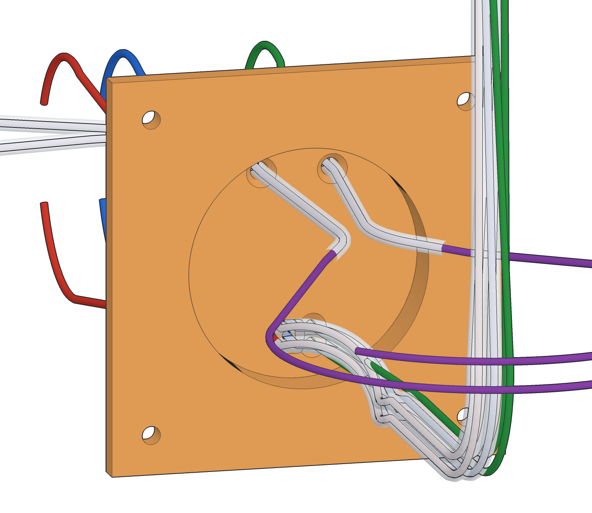
14 PTFE tubes seat together in the rounded window
2Boom rope holes (bare rope)
3Slew sleeve holes (Ø4.6, pass-through)
4Conduit socket
Fig. 22Box fitting P18 from the sandbox side, with the tube and rope paths.
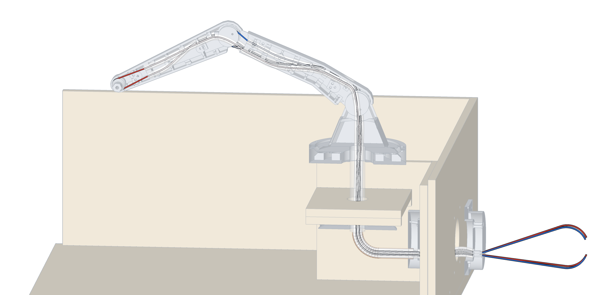
1Box fitting window (tube stop)
2Spacer chamber: spare tube length bows here
3Pedestal fitting window (tubes slide)
4Up the copper elbow and the PEX tube
5Stick tubes stop in the boom tip
6Bucket tubes stop in the stick nose
Fig. 23Where the four arm tubes run when finished.
You need
P18
Box conduit fitting
1
S04
PTFE: stick_hi, stick_lo, bucket_hi, bucket_lo
4
Why this order. The tubes stop in P18 on its sandbox side, and P18 is clamped against the box front by the rod nuts. Once those nuts are on, the window cannot be reached. Derived
Take the four temporary nuts off the rods outside the sandbox wall (the silicone must have cured).
Seat the box end of the four arm tubes in P18’s rounded window from the socket side (the side with the big round recess). They sit side by side and stop on the window floor.
Stand the box a little way from the sandbox (top off) and hold P18 inside it behind the front. Feed the four free tube ends out through the box front’s 2-7/16″ hole, through the sandbox wall’s hole, across the spacer chamber, through P17’s window, into the copper elbow and up the PEX tube until they come out at the top of the turret.
Slide the box up to the sandbox wall: the four rods pass through the box front’s 3/16″ holes. Slip P18 over the rod ends inside the box, socket toward the box front, and push it flat against the front while you take up the tube slack at the turret.
Fig. 24Box against the sandbox wall: four through-rods and two corner bolts (box top, left side and sandbox walls hidden).
You need (this page)
H13
8-32 nut (from the Stage 4 bag)
4
H05
M3 × 30 socket cap
2
H08
M3 flat washer
4
H07
M3 nut
2
Run an 8-32 nut onto each rod end on P18’s flange. Tighten the four in turn, a little at a time, holding the nut on the pedestal side with the second wrench (reach in through the pedestal’s +u hatch). The stack closes up: P18, box front, sandbox wall, spacers, pedestal wall, P17.
Fit the two lower-corner bolts: M3 × 30 through the box front and the sandbox wall, flat washers both sides, nut inside the sandbox.
At the turret, pull the four tubes up gently and leave them hanging out of the top for Stage 8. Their spare length bows inside the spacer chamber.
Check. Each tube slides a little when pushed at the turret end and does not come out of P18’s window when pulled. The box stands flat on the same table as the sandbox; the pedestal does not move when pushed. Verified
Do not over-tighten the rods. The nuts bear on printed flanges. Snug plus a quarter turn is enough; crushing the OSB or cracking a flange breaks the seal. Assumption
Sand seal. If you see daylight round the outer spacer from inside the sandbox, run a second bead of silicone into the corner between the spacer and the wall.
Boom, stick and bucket, each with its drum, its rope’s joint end and its PTFE tubes laid in before the halves close.
Read Appendix C items 1–3 first. The CAD shows three fit problems in this stage: the stick-drum key screws collide, two stick lug holes merge, and the joining-lug screws are enclosed once a member is closed. The steps below say where each one matters.
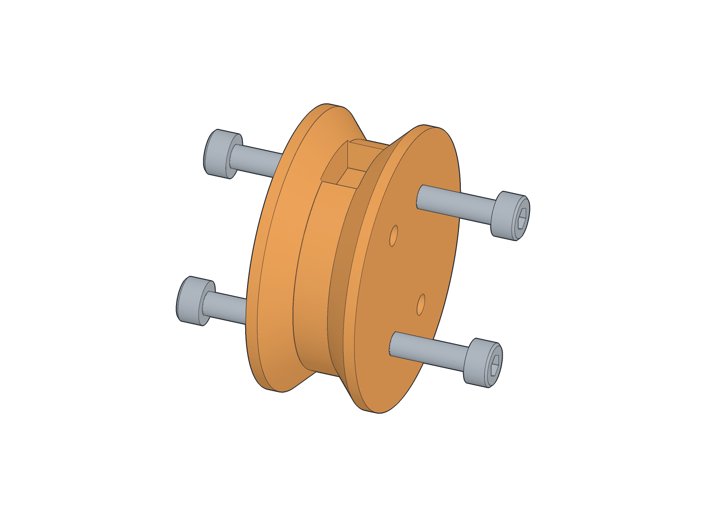
1Boom drum (P05)
2M3 × 12 key screw (4: two per face)
3Crimp pocket (rope midpoint)
Fig. 25Boom drum with its four key screws.
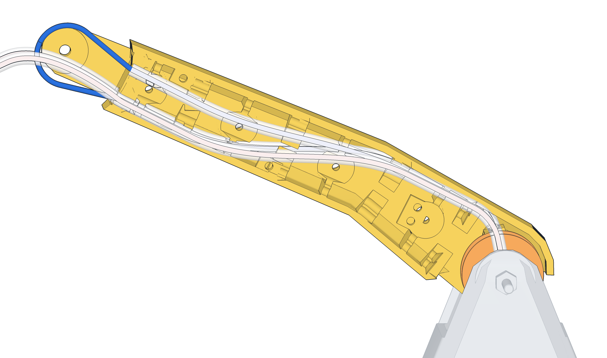
1Boom half, right (P02), split face up
2Boom drum: key-screw heads drop into the wall pockets
3Stick tubes: to their stop in the boom tip
4Bucket tubes: on through the boom tip
5Boom ropes: straight down into the tower
Fig. 26Boom right half with drum, PTFE tubes and boom rope.
You need — boom
P05
Boom drum
1
H02
M3 × 12 socket cap (key screws)
4
S01
Boom rope 49-13/16″ (midpoint marked)
1
S02
Single crimp sleeve
1
P02
Boom half, right
1
P01
Boom half, left
1
H03
M3 × 20 socket cap (lugs)
4
H07
M3 nut
4
Screw two M3 × 12 into each face of the boom drum (4 screws, into the Ø2.6 pilots) until the underside of each head is 10 mm from the drum face. The heads will sit in pockets in the boom walls. Verified
Crimp the single sleeve onto the boom rope at its midpoint mark. Seat the sleeve in the drum’s crimp pocket and wrap one tail each way round the groove.
Lay the drum in the right boom half (P02) so its two right-hand screw heads drop into the wall pockets at the boom root.
Lay the four PTFE tubes from the turret into P02’s channels: the two stick tubes to their stop at the boom tip; the two bucket tubes on through the boom tip. Trim each stick tube so it seats on its stop.
Stage 8 — continued: close the boom and pin it to the tower
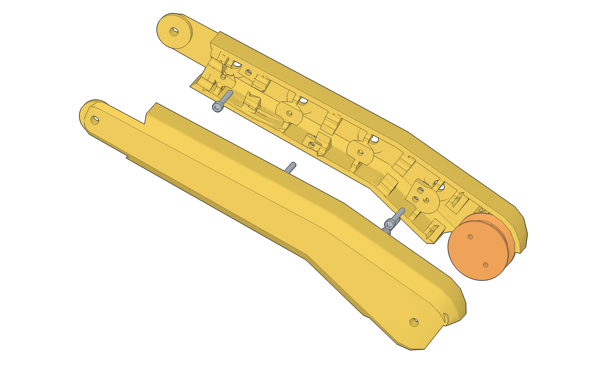
1Boom half, left (P01)
2Boom half, right (P02)
3Joining lugs: M3 × 20 + nut (see Open item 3)
Fig. 27Closing the boom.
18-32 rod, 1-5/8″ (one per side)
2Jam pair: 2 × 8-32 nut, outside the tower cheek
3Inner end flush with the boom's inner wall
4Tower cheek
Fig. 28Boom split pins: one short rod per side.
Feed both boom rope tails down into the tower and the PEX tube, and push them on down to the box (see the tip).
Close the boom: put the left half (P01) on, the drum’s left screw heads in its pockets.
Joining lugs: 4 × M3 × 20 + nut clamp the halves. Open item 3: in the CAD the lug screws cannot be reached once the halves are closed — decide how you will hold the halves before this step.
Set the boom root between the tower cheeks. Push a 1-5/8″ 8-32 rod through each cheek into the boom wall until its inner end is flush with the boom’s inner wall.
Fit two 8-32 nuts on the outer end of each pin and lock them against each other (jam pair) against the cheek.
You need — boom pins
H10
8-32 rod, 1-5/8″
2
H13
8-32 nut
4
Threading a bare tail down the elbow. Both fittings have bell-mouth entries on the chamber side. If a boom tail will not find its Ø2.4 hole at the bottom of the elbow, thread it up from the box side instead (through P18, the spacer chamber, P17, the elbow and the PEX), take it over the drum and send the other tail down.
Pin too long inside. A split pin pushed past the boom’s inner wall blocks the PTFE tubes that cross the joint axis. The inner ends must be flush. Verified
3Bucket drum-axle (P07): journals in the nose holes
4Bucket tubes: stop in the stick nose
5Stick tube stops (boom tip)
Fig. 29Stick right half: drum, bucket drum-axle, tubes and ropes.
1Stick drum (P06)
2Key screws enter the same through-pilot from both sides
Fig. 30Stick-drum key screws.
You need — stick
P06
Stick drum
1
H02
Key screws — see Open item 1
4
S01
Stick rope 67″
1
S02
Single crimp sleeve
2
S01
Bucket rope 80-7/8″
1
P07
Bucket drum-axle
1
P04
Stick half, right
1
P03
Stick half, left
1
H03
M3 × 20 + nut (lugs)
3–4
H11
8-32 rod, 7/8″
2
H13
8-32 nut
4
18-32 rod, 7/8″ (one per side)
2Jam pair outside the boom tip
3Boom tip
Fig. 31Stick split pins.
Stick drum key screws: each pilot goes right through the 10 mm drum, and the model puts an M3 × 12 into it from each side with the heads 6.2 mm from the faces — the tips then overlap by 1.6 mm. Use M3 × 8 (in your kit) or shorten the M3 × 12 by 2 mm. Open item
Crimp the stick rope’s single sleeve at its midpoint, seat it in the stick drum’s pocket and wrap the tails. Lay the drum in P04 with its screw heads in the pockets.
Push each stick tail into the end of its stick tube at the boom tip and on down the tube to the box.
Bucket drum-axle: put its journals in the nose holes of P04. Crimp the bucket rope’s sleeve at its midpoint, seat it in the drum-axle’s pocket, wrap the tails, and push them into the bucket tubes (laid in P04’s channels to their stop in the nose) and on to the box.
Close with P03. Lugs: the two at the stick root overlap (2.9 mm apart) — only one screw fits there (Open item 2).
Fit the stick to the boom tip with a 7/8″ 8-32 rod each side (inner ends flush) and a jam pair outside.
1Ear, left (P09): hex socket on the axle's hex end
2Ear, right (P10)
3Bucket drum-axle (P07) in the stick nose
48-32 rod, 2-9/16″: the bucket pin
5Jam pair each end
6Bucket (P08): glue faces on the lugs
Fig. 32Bucket, ears and bucket pin, exploded along the pin.
You need — bucket
P08
Bucket
1
P09
Bucket ear, left (2026-09-29 file)
1
P10
Bucket ear, right (2026-09-29 file)
1
H12
8-32 rod, 2-9/16″ (bucket pin)
1
H13
8-32 nut
4
CA or epoxy
Glue last. Glue the ears only with the bucket pin fitted and tightened, so the hex sockets, the pin and the bucket lugs line up.
Ears swapped. The left ear (P09) goes on the +v end of the drum-axle. Swapped ears do not seat on the bucket lugs.
Dry fit: slide each ear’s hex socket onto the drum-axle’s hex end (left ear on the +v end). The ears’ lower blocks rest on the bucket’s lugs and the small pin under each ear goes into the bucket.
Push the 2-9/16″ rod through the left ear, the drum-axle’s bore and the right ear. Centre it.
Fit a jam pair on each end, snug against the ears: the rod clamps the ears to the drum-axle’s shoulders.
When the bucket hangs straight and swings freely, glue each ear’s lower block to its bucket lug (CA or epoxy), as on the original EX-MA. Let it cure fully before rigging.
Swing the bucket, stick and boom by hand through their ranges: nothing may rub.
Check — joint ranges. Boom -40° … +45°, stick -45° … +50°, bucket -55° … +85° from the modelled pose, with no rubbing. The model is contact-free well beyond these (boom −42…+80°, stick −54…+150°, bucket −56…+170°). Verified
Set every joint to the middle of its range and every lever upright, then loop each tail onto its anchor and tension it.
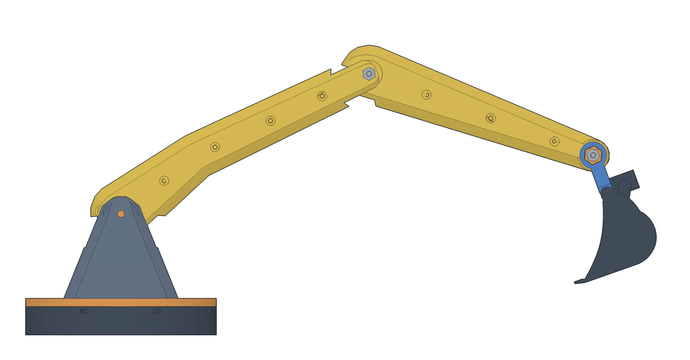
Fig. 33The rigging pose: each joint at the middle of its working range, measured from the modelled pose (+ = raised).
Configuration: zero positions Verified
Joint
Working range
Rig at
Boom
−40° … +45°
+2.5°
Stick
−45° … +50°
+2.5°
Bucket
−55° … +85°
+15°
All levers
slot end to slot end
upright
Slew
−90° … +90°
arm straight out, wheel centred
Crimping at mid-range leaves the same rope wrap on the joint drum at both ends of travel. Prop the arm in this pose with a block
while you work. Verified
You need
S03
Double crimp sleeve
6
H01
M3 × 10 button head (in the hubs)
6
H08
M3 flat washer
12
H09
M3 split-lock washer
6
H07
M3 nut
6
Inside the box each tail comes out of P18’s box face. Take each strand to its own lever drum: boom tails to the boom hub, stick to the stick hub, bucket to the bucket hub. Strands never cross.
Wrap the tail into the groove and pass it through the rim hole beside its anchor slot (upper strand to the upper anchor, lower to the lower).
With the anchor screw at the outer end of its slot (nearest the rope hole), pull the rope just taut and crimp a loop with a double sleeve so that it sits on the screw.
Stack on the screw: flat washer — rope loop — flat washer; the split-lock washer and nut on the other side of the web. Snug only.
Crimping with the joint off-centre. A crimp made with the joint at one end of its range leaves no rope wrap at the other end, and the lever stops short. Re-check the rigging pose before every crimp.
1Rope anchors: M3 × 10 button head in the slot (tension adjuster)
2Washer — rope loop — washer under the head
3Rope holes through the rim into the groove
4Handle socket + pinch clamp (M3 × 20)
5Drag clamp (M3 × 20 + lock washer)
6Ø60 drum groove
Fig. 34Lever hub (boom): anchors, rope holes and clamps.
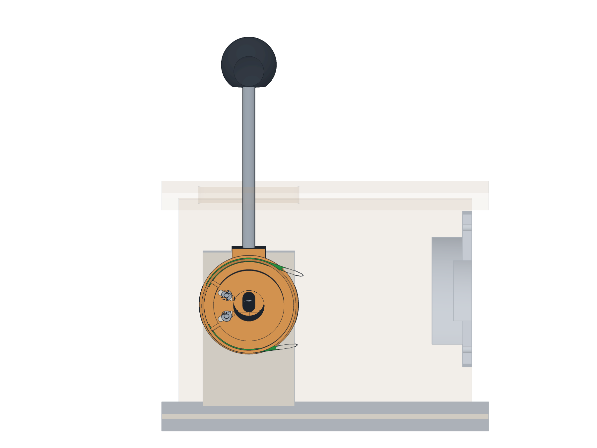
1Push = forward (toward the sandbox)
2Lever axle (5/16″ rod)
3Boom rope strands to the box fitting
Fig. 35Boom lever from the side (box cut away): push = forward.
Tension: slide each anchor screw along its slot toward the drum centre (away from the rope hole) until both strands are taut with the joint still at mid-range and the lever upright, then tighten the nut. Each slot gives about 8 mm of take-up.
Repeat for the other strand of the same circuit so the lever stays upright when both are taut.
Direction: push the lever forward (toward the sandbox). It must give boom down, stick out, bucket dump. If one is reversed, undo that rope at the joint drum and wrap it the other way round the drum.
Move each lever slowly end to end and watch its joint: smooth, no slack strand, the rope stays in every groove.
Open item 6 — which way to slide. The checklist says “slide the anchors outward”. In the CAD the rope enters each slot at its outer end, so moving the screw inward is what takes up rope. Trust what you see: the strand tightens as the screw moves away from the rope hole. Verified
Check — no coupling. Hold the bucket lever still and move the boom and stick levers through their full travel: the bucket must not move. The model predicts at most 0.66 mm of rope movement from tube bending (“Bowden coupling”). Verified
Push sleeve A from its post (the one nearer the levers) through P18’s upper slew hole on that side, across the spacer chamber and into P17’s angled counterbore until it stops. Seat its other end in post A’s counterbore and trim the 3/8″ extra. Same for sleeve B.
Crimp a single sleeve on one end of rope A. Thread the other end through the pedestal-fitting exit, sleeve A and post A to the spool.
Seat rope A’s crimp in the upper-lane pocket of the pedestal drum and wrap it half a turn in that lane. Rope B: lower lane.
Swapped lanes. Rope A (the shorter, 30-5/16″) runs in the upper lane on both drums and in sleeve A (10-15/16″). If ropes cross between the drums, the arm turns the wrong way.
Fig. 37Zero position seen from above, arm pointing straight out (+u):
pocket and anchor angles from the model. Verified
Point the arm straight out (+u, away from the box). Turn the pedestal drum on the PEX tube until its pockets are at the angles in the diagram (lane A 51° to the right of the arm, lane B 62° to the left), then tighten its pinch clamp hard. The drum must not slip on the tube. Verified
Turn the spool so its two anchors are at the angles in the diagram (wheel centred).
Wrap each rope half a turn round its spool lane, pass it through the rim hole by its anchor, and crimp a loop (double sleeve) onto the anchor screw with the screw at the outer end of the slot: washer — loop — washer, lock washer and nut below the web.
Tension both ropes by sliding the anchors toward the spool centre, keeping the arm straight out. Each slot gives about 12 mm.
Turn the wheel left: the arm must swing to your left, 1 : 1, up to 90°. Then right to 90°.
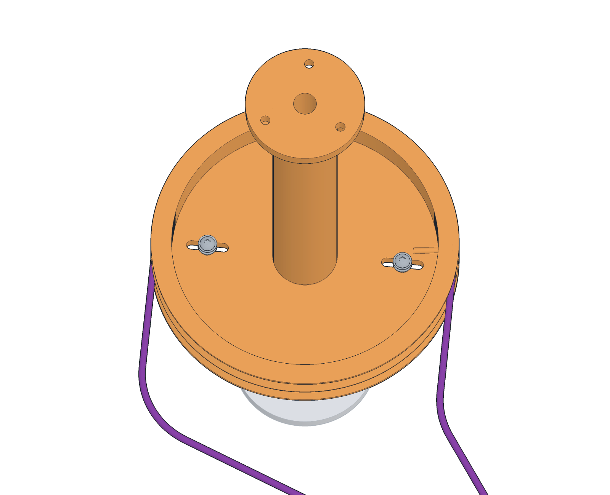
1Anchor A: M3 × 10 button head, washers each side of the loop
2Anchor B
3Upper lane
4Lower lane
Fig. 38Spool anchors and lanes from above.
Check — wrap left at the ends. At ±90° each rope must still have at least 90° of wrap on both drums (the model has 90–270°). If a rope runs out early, the drum or the spool was not centred: re-centre and re-crimp. Verified
Drum clamp. A slipping pedestal drum feels like “the wheel turns but the arm doesn’t”. Tighten the M3 × 25 pinch clamp before tensioning, and re-check it after the first test.
Lower the top onto the box: the spool tube passes through its 1″ hole (the top is the spool’s upper bearing). Screw it to the front, rear and both sides, 4 screws per edge — screws only, no glue, so it lifts off for service.
Push each handle rod down through its slot into its hub socket (25 mm deep). Tighten the handle pinch clamp (M3 × 20, lock washer and nut).
Glue a knob on each handle: the rod goes 14 mm into the knob’s bore.
Bolt the wheel to the spool’s top flange: 3 × M3 × 20, heads in the wheel’s counterbores, lock washer and nut under the flange.
Fit the washer and nut on top of the spool axle. Snug it until the spool has no up-down play but still turns freely. Assumption
Fit the three drag-clamp screws (M3 × 20, lock washer, nut) loosely; they are set in Stage 12.
Check. Each lever stops on the end of its slot at both ends of travel — the slot is the hard stop. The model has the handle touch the slot end exactly at the end of travel, with nothing else touching. The bucket knob passes 5/8″ from the wheel rim at its end of travel (Open item 6). Verified
Run every control through its full range, check for coupling, then set the lever friction.
Fig. 40Working ranges set by the lever slots, measured from the modelled pose shown (+ = raised).
Function test Verified
Each lever, slowly, end to end: its joint moves through its whole working range and the handle stops on the slot ends.
Wheel to −90° and +90°: the arm follows 1 : 1 and no rope jumps its groove.
No coupling: move the boom and the stick through their ranges while watching the bucket. It must not move.
At every end stop, look at the ropes: each stays in its groove, and no PTFE tube is pinched at a joint.
Turn the turret by the wheel through ±90°: smooth, no knocking from the ball ring.
Configuration: lever holding friction
Drag clamps: with the arm extended, tighten each lever’s drag-clamp screw a little at a time until the lever holds its position when you let go. The boom needs the most; the bucket almost none.
Re-tension every circuit after the first hour of use (rope stretch and crimp seating), using the slotted anchors.
Lever
Holding torque (model)
Clamp force (µ 0.3)
Boom
0.65 N·m
172 N
Stick
0.23 N·m
60 N
Bucket
0.04 N·m
10 N
From the box validation report Verified. Use them to compare levers: the boom clamp needs several times the stick’s.
Done. When every check on this page passes, the build is complete. Keep the hardware bags: the spares are listed in Appendix A.
Find the symptom, check the likely cause, then go to the stage named in the fix. Causes come from how the circuits are built;
where a cause is general practice it is not tagged separately.
Symptom
Likely cause
Fix
A lever moves the wrong joint
Strands crossed in the box, or ropes swapped at the box fitting
Each circuit’s two strands go to its own hub; the box fitting columns run boom / stick / bucket in the same order as the hubs (Stage 9).
A joint moves the wrong way
Rope wrapped the wrong way round the joint drum
Reverse that rope’s wrap on its joint drum (Stage 9, step 7).
Moving one lever moves another joint
PTFE tube not seated at the box fitting or at its arm stop; tube pinched
Re-seat both tube ends; check the tube is not trapped by a split pin or lug (Stage 8).
Lever stops short of the slot end
Rope crimped with the joint off-centre; rope too tight
Return to the rigging pose and re-crimp (Stage 9).
Lever floppy, joint lags
Rope slack
Slide the anchors toward the drum centre (Stage 9, step 5).
Arm sags when you let go
Drag clamp too loose
Tighten that lever’s drag clamp (Stage 12, step 6).
Lever very stiff
Drag clamp too tight; axle nuts squeezing the hubs; hub rubbing a neighbour
Ease the drag clamp; back the axle nuts off; hubs need their 0.5 mm gaps.
Rope jumps out of a groove
Slack rope at an end stop
Re-tension; check the joint is not driven past its working range.
Wheel turns, arm does not (or slips)
Pedestal slew drum or turret-hub clamp slipping on the PEX tube
Tighten both M3 × 25 pinch clamps (Stages 5 and 10).
Arm turns the opposite way to the wheel
Slew ropes crossed between lanes
Rope A upper lane on both drums, rope B lower (Stage 10).
Slew range less than ±90°
Drum or spool not centred when the ropes were crimped
Re-centre both (Stage 10, steps 4–5) and re-crimp.
Turret rocks or lifts
Retaining ring too high
Shim under the retaining ring (Stage 5 check).
Turret binds or knocks
Missing or extra BB; uneven ring screws; sand in the race
57 balls; loosen the ring screws evenly; clean the race.
Bucket wobbles on its pin
Jam nuts loose; ear glue joint failed
Re-lock the jam pairs; re-glue the ear with the pin fitted.
Handle turns in its hub
Handle pinch clamp loose
Tighten the M3 × 20 handle clamp (Stage 11).
Sand coming out at the box
Spacer seal leaking at the sandbox wall
Run silicone into the corner between the outer spacer and the wall from inside the sandbox (Stage 7 tip).
Rope frays at a fitting
Burr on the copper end or a fitting hole
Deburr; check the rope runs through the bell-mouth holes.
Paths from cable-paths.py on the minimal model. Each tube keeps the same allowance over its path as in the
full design: 3/8″ to trim plus the spare length that bows in the chamber.
The stack, box to pedestal Derived
Layer
Thickness
P18 flange (box fitting)
6 mm
Box front W02
7/16″
Sandbox wall W18
7/16″
Spacer frames W22 + W23
7/8″
Pedestal wall W10
7/16″
P17 flange (pedestal fitting)
6 mm
Rod: stack + a nut and 1/16″ of thread each end
3-1/16″
Chamber between the fitting floors: 3-1/8″; spare-tube bow radius about 1-3/16″ (5/8″ minimum).
Found by checking the project’s CAD and hardware model. Items 1–6 and 8 are in the project files as they are; item 7 comes from
the minimal build with your prints. Each needs your decision. Open item
#
What the files show
Options
1
Stick-drum key screws collide The stick drum is 10 mm thick and each key pilot runs right through it. The hardware model puts an M3 × 12 into each pilot from each side; the two tips overlap by 1.6 mm.
Use M3 × 8 socket caps on the stick drum (in your kit), or grind 2 mm off each M3 × 12.
2
Stick root lugs overlap Joining lugs 1 and 2 of the stick are 2.9 mm apart, so their holes merge and their screws and nuts overlap.
Fit one M3 × 20 in that lug; the stick then has 3 lug screws (1 spare).
3
Joining-lug screws are enclosed On both members every lug screw head sits inside the closed shell, and the outer walls have no access hole on the screw axis.
Decide before Stage 8: (a) drill a small access hole on each lug axis; (b) close the halves without lug screws, held with tape or dots of CA along the seam; (c) add access in the CAD and reprint the halves.
4
5/16″ axle ends Both axles carry 5/16″ nuts. One design note calls the rod “smooth”.
Threaded rod: nothing changes. Smooth rod: thread the ends with a 5/16-18 die or use 5/16″ shaft collars.
5
Pedestal not screwed to the floor The cut list says the pedestal screws to the sandbox floor, but no screws are counted. In the minimal build the four rods clamp it to the sandbox wall.
Optional: 4 extra #6 × 1-1/4″ up through the floor into the ±v walls (Stage 4).
6
Tension direction The checklist says to slide the rope anchors “outward”. In the CAD the rope enters each slot at its outer end, so the strand tightens as the screw moves inward.
Slide toward the drum centre (Stages 9 and 10).
7
Bucket knob near the slew wheel With the kept 145 mm spool the wheel sits 3-3/4″ above the lid. At the bucket lever’s end of travel its knob comes within 15.5 mm (5/8″) of the wheel rim; the full design had 24 mm.
Works as is; mind your knuckles on the bucket lever. A reprinted short spool (compact spec) would lower the wheel.
8
Slicer plates hold the old base and ears Plates 4 and 6 of the PLA+ project were made before the 2026-09-29 rebuilds.
If you have not printed P09, P10 and P12 yet, use the 2026-09-29 STL files (Stage 1).
What was verified for the minimal build, and how
Geometry
A copy of the project sources with the minimal constants (7/16″ OSB, 5/8″ floor, no shim, spacers, compact box with the
kept prints) rebuilt every panel, placement and rope path. Illustrations are rendered from it.
Interference
Every pair of parts and fasteners checked against the full design. The only new contact is the elbow support on the
floor, which is intended. The left corner bolt was moved 5/16″ left to clear the spacers.
Not verified
Physical fit of real prints, OSB and particle-board screw holding, glue strength, rope friction. Items tagged
Assumption are general practice.
What the minimal build changes, compared with the first manual (2026-10-10). Arm, turret, slewing ring, drums, fittings and every
printed part are the same. Verified
Same printed parts. P17 and P18 are still called “conduit fittings”: their big sockets now open into the spacer chamber instead of holding the PVC. Nothing is reprinted.
Do not mix the manuals’ cut sizes. Every wood size, rope, tube and rod length in this manual is for the minimal build with your boards. The first manual’s millimetre sizes are for 12 mm plywood and the conduit.